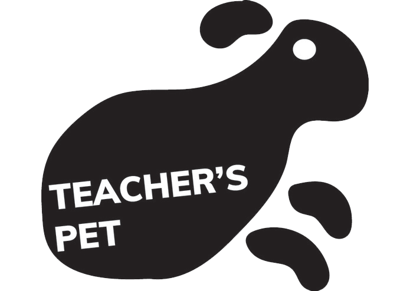

<div class="container-fluid h-100 introcontainer roboto text-white">
  <div class="row h-100 ">
    <div class="col-12 col-sm-6 text-center pl-sm-5">
      <div class="row  h-25 mt-3 ">
        <div class="col my-auto">
          <h1 class="display-4 font-weight-bold">TEACHER'S PET</h1>
        </div>
      </div>
      <div class="row mt-sm-2">
        <div class="col my-auto">
          <h6 class="font-italic mt-2 mb-sm-5 text-center">Built in only 36 hours at UofTHacks VI (2019).</h6>
          <div class="mt-5 pt-sm-5 paragraph-size">
            <p class="paragraph-size">This project uses Azure Machine Learning to detect when hands are raised within a classroom. When a hand is detected, our co-processor, using Flask, sends a signal to our mobile app, which then vibrates the lecturer’s phone.</p>
            <p class="paragraph-size">
                With over 200 images, we collected our dataset ourselves—and took full advantage of the Azure Machine Learning Toolkit, Flask, Google’s Flutter mobile framework, and more.</p>

          </div>
          <a mat-raised-button class="mx-1 buttoneffect text-dark" href="https://devpost.com/software/teachers-pet" target="_blank" >View on Devpost</a>
          <a mat-raised-button class="mx-1 buttoneffect text-dark"href="https://github.com/SmitRao/UofT-Hacks-2019" target="_blank">View on GitHub</a>
          
        </div>
      </div>
    </div>
    <div class="col-1">

    </div>
    <div class="col-5 d-sm-block d-none my-auto text-center">
        
    </div>


  </div>
</div>
